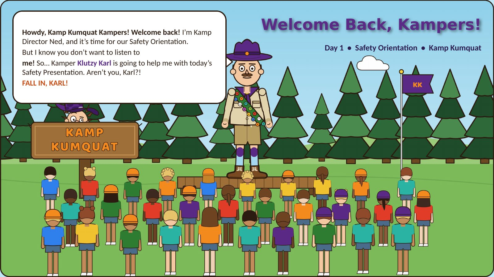
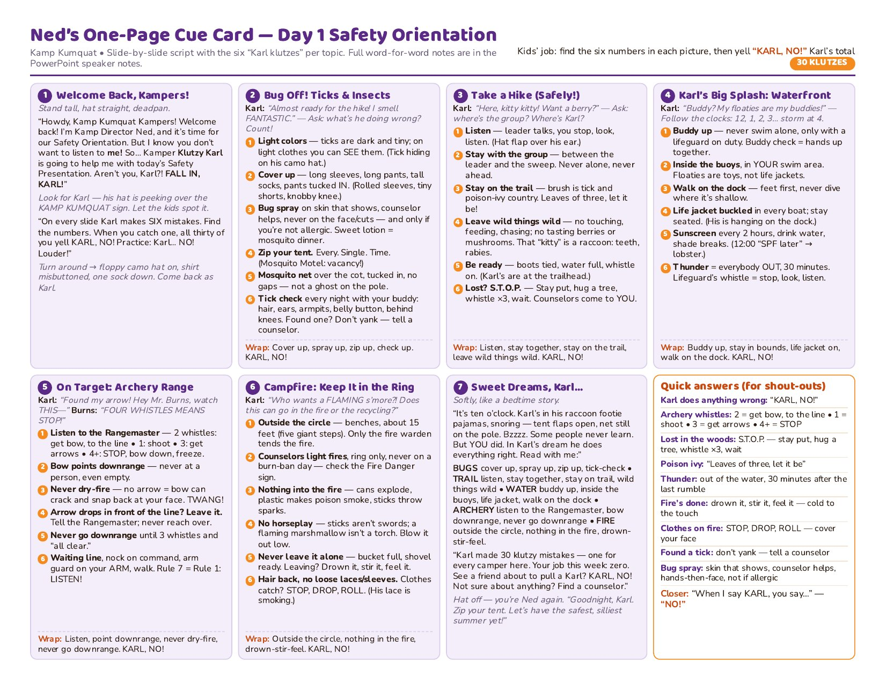

Ned's One-Page Cue Card

Fable's deck. Same brief, other model: see Astra's deck.
Designed and tested to WCAG 2.2 AA and Section 508 accessibility standards. Every slide image has a full text description, and the viewer works by keyboard (arrow keys) and touch.
A seven-slide, illustrated orientation for a fictional summer camp. Director Ned runs the briefing while his well-meaning counterpart, Klutzy Karl, makes every mistake so the campers can spot and fix it.

